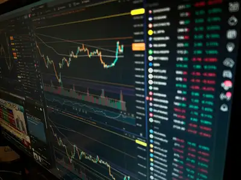

Day Trading Basics

What Is Day Trading?
Day trading is the practice of buying and selling financial assets during the same trading day. A trader attempts to take advantage of short-term price movements instead of holding a position for months or years.
Day traders can participate in markets such as stocks, currencies, and futures. Successful trading requires risk management, discipline, and an understanding of how markets move.
Understanding Futures
Futures are financial contracts based on assets such as stock indexes, commodities, and currencies. Futures traders can speculate on whether the price of a market will rise or fall.
Popular index futures include contracts based on the S&P 500 and Nasdaq-100. Because futures can involve leverage, beginners should understand the risk involved before trading with real money.
Risk Management
Risk management is one of the most important parts of trading. A trader should determine how much money they are willing to risk before entering a trade. Losses are a normal part of trading, so protecting trading capital is important.
- Determine how much you are willing to risk.
- Choose an entry point and stop-loss level.
- Set a realistic profit target.
- Follow the trading plan without making emotional decisions.
Important Trading Terms
- Stop Loss
- An order or predetermined level used to limit the amount lost on a trade.
- Take Profit
- A predetermined price where a trader plans to close a profitable position.
- Risk-to-Reward Ratio
- A comparison between the amount a trader is risking and the potential profit of a trade.
Learn More About the Markets
Educational information about futures markets is available from the CME Group Education Center.
Investors can also learn more about markets and investing through Investor.gov.
Contact
Trading AcademyOrem, Utah
Call us at 801-555-0100